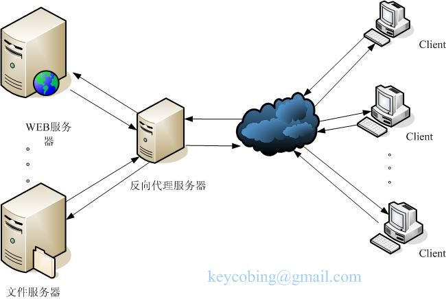

一、 原由
单位服务器对外的域名和IP都有限制，最近端口也封锁的很严重，又搞了个安恒玄武盾，搞定好的功能都没办法使用。 最初选择反向代理主要是希望通过网址的二级目录形式访问内网不同端口的web服务。开始选择的是Bonobo git server 通过http方式提交代码，应该是最基本的吧，谁知url当中出现"."就会被防火墙识别成威胁，最后选择了scm-manager。 为此，专门学习了一下反向代理。
二、 反向代理原理
反向代理（Reverse Proxy）方式是指以代理服务器来接受Internet上的连接请求，然后将请求转发给内部网络上的服务器；并将从服务器上得到的结果返回给Internet上请求连接的客户端，此时代理服务器对外就表现为一个服务器。 通常的代理服务器，只用于代理内部网络对Internet的连接请求，客户机必须指定代理服务器,并将本来要直接发送到Web服务器上的http请求发送到代理服务器中。当一个代理服务器能够代理外部网络上的主机，访问内部网络时，这种代理服务的方式称为反向代理服务。 
三、 IIS反向代理配置
配置IIS反向代理需要下载安装ARR（Application Request Routing）， http://www.iis.net/downloads/microsoft/application-request-routing 安装完成后，IIS里会多出两个图标，分别是Application Request Routing和URL重写。注意：需要在IIS当中双击ApplicationRequest Routing，在右侧Server Proxy Settings里，将代理功能开启。
IIS反向代理配置实质就是配置URL重写规则。IIS当中的URL重写规则分为“入站规则”和“出站规则”。简单的理解入站规则指的是外部用户通过浏览器向代理服务器提出的Get请求（通过浏览器调试工具中控制台可以查看）时应用的规则。出站规则指的是代理服务器接后台回传回来的数据后，通过反向代理服务器向用户端浏览器回传过程当中应用的规则。 iis反向代理配置当中最难写的就是出站规则。 入站规则和出站规则当中对于url后面是否多一个“/”，往往也会带来不小的坑。 出站规则建议先用向导配置，会产生一个判别文本是html的条件，如果缺少这个条件往往出站规则就会错误。
四、Nginx反向代理配置
nginx配置反向代理确实比较简单。 但是，nginx默认只支持类似iis的入站规则代理，即客户端提出get请求的时候，进行url的改写。另外，好像默认是启动了动静分离，静态内容（css,js）默认是从nginx代理服务器的目录当中访问，当启用了nginx反向代理，指向内网的服务器的时候，往往会丢失css和js。对于丢失css和js的解决方法是是采用rewrite语句改写get请求（url)，这带来的一个问题是css和js需要有一个相同的改写模式。 如果一个代理服务器要配置转向多个web网站的时候，往往会隐藏风险。
总结：个人配置了iis反向代理，反而认为功能要比nginx强大，好用。 nginx虽然简单的配置html的代理简单，但是对于多个网站的同时反向代理不太合适。 实际上，最后2个反向代理方法都放弃了。 选择了FRP内网穿透功能。
五、正则表达式
不管是iis和nginx的反向代理，都需要用到正则表达式。 验证正则表达式最好的平台应该就是： https://regex101.com/
事实上，这个网站也是开源的，托管在github上。